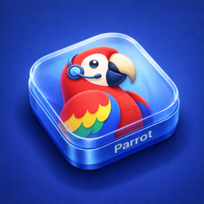

Or take your time.
Prefer a tap? Enable toggle mode to start and stop recording with your shortcut. A configurable limit keeps long takes in check.
A LITTLE UTILITY FOR YOUR MAC
Find your words. Fine-tune your voice.
One shortcut. A little more confidence.
A thought. A sentence.
A little better the next time.
ONE SHORTCUT. MANY SMALL MOMENTS.
A pronunciation, a presentation, a quick mic check.
Hear it while it’s still fresh in your mind.
Hold the shortcut to record. Release to hear it back after your chosen delay. Make the shortcut your own in Settings.
Prefer a tap? Enable toggle mode to start and stop recording with your shortcut. A configurable limit keeps long takes in check.
Replay your ten most recent recordings from the menu bar, or save a take as an audio file. Keeping recent takes is optional.
Choose your microphone and playback device, adjust the volume, and set the pause before playback. Built-in update checks keep new releases within reach.
LESS, BUT CONSIDERED.
A focused little app for a simple daily ritual.
Without accounts or extra steps.
Built with Swift, AppKit, and SwiftUI. Available for Apple silicon and Intel Macs.
Audio stays on your Mac. No account, cloud upload, or analytics. Update checks connect to GitHub.
Unique takes, bounded recording length, and a live microphone meter. Recording animations are released when the overlay closes.
A FEW DETAILS
Small app. Straight answers.
The preview asks for microphone access only when you press Record your voice. Press Stop & listen to hear your take. Recording stops automatically after 30 seconds, and the microphone switches off before playback.
Your audio is kept temporarily in this browser. It is never uploaded or saved by the website. Clear recording, start another take, or leave the tab to discard it. If playback doesn’t begin automatically, press Play. The preview needs HTTPS and a browser with microphone-recording support.
Parrot requires macOS 14 Sonoma or later and supports Apple silicon and Intel Macs. It needs microphone access to record and Accessibility access to respond to global shortcuts.
Download the ZIP, unzip it, and move Parrot.app to Applications. Open Parrot and grant microphone and Accessibility permissions when you’re ready to use it. The Permissions tab in Settings shows their status.
Current release: version 1.2.0 is ad-hoc signed and has not been notarized by Apple. macOS may block its first launch. Read the release notes before downloading.
Hold Command–Shift–Z to record, then release to play back. Optional toggle mode uses Command–Shift–T by default. Enable it or change either shortcut in Settings → Shortcuts.
Recent takes are kept locally in ~/Library/Application Support/Parrot/Recordings. Parrot keeps up to ten takes, plus the current take when recent recordings are disabled. Use Save Last Recording to keep an exported copy. Turn off Keep Recent Recordings to remove each current take when the next one starts.
Parrot uses Sparkle to check GitHub daily for signed updates. It asks before downloading and installing by default. You can disable automatic checks or use Check for Updates from Settings or the menu bar.
Versions before 1.2.0 need one manual download to gain the updater.
Yes. Parrot is free and open source under the MIT license, with no subscription or account. Explore the code or report an issue on GitHub.

A LITTLE PRACTICE GOES A LONG WAY.
Speak. Listen. A little better every time.
Download for Mac Not yet Apple-notarized. Read the installation note